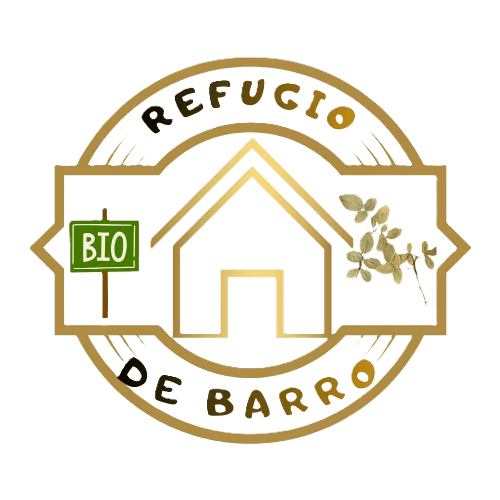
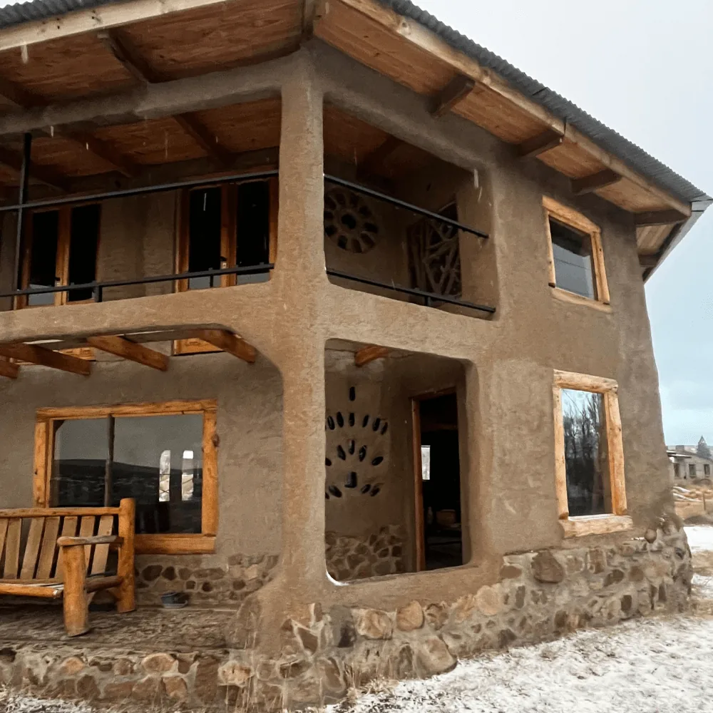
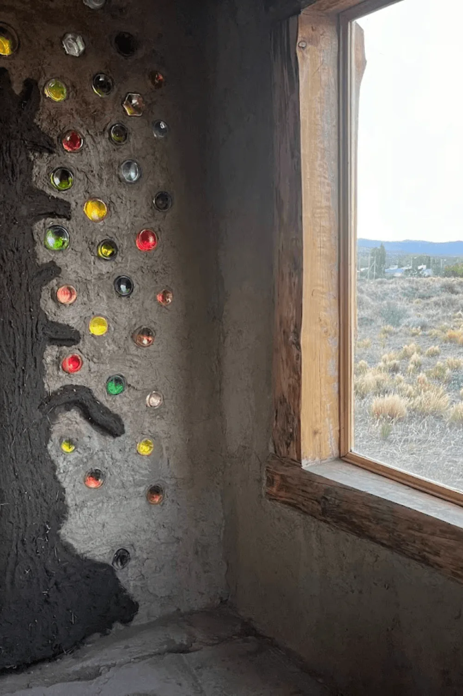
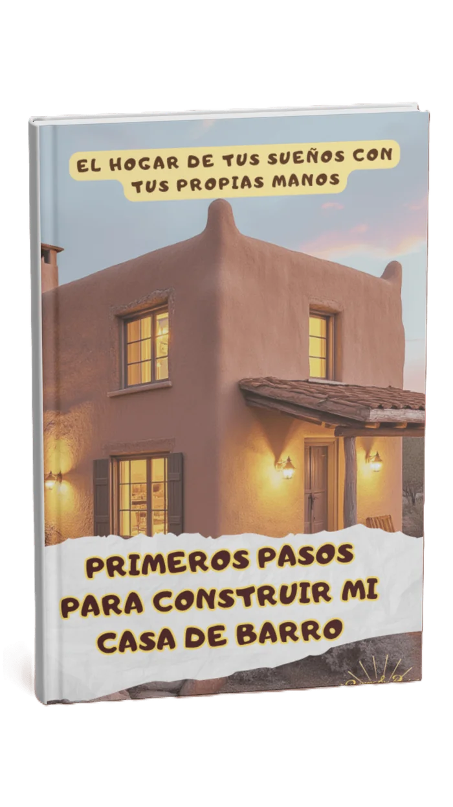
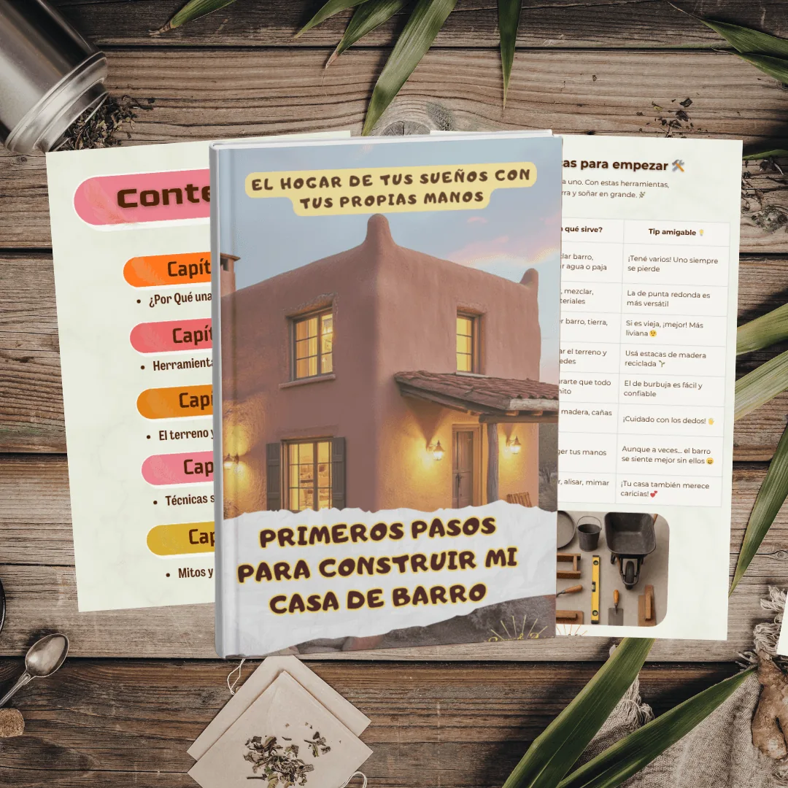

01
Hermosa
Casas únicas, con texturas, colores y formas que nacen de vos.

Refugio de BarroBioconstrucción · materiales naturales
Construimos en armonía con la tierra y con vos.
Materiales naturales, casas ecológicas, talleres y asesorías en bioconstrucción.
con tus propias manos
Una casa de barro es humilde y poderosa
En un mundo de hormigón y prisas, construir con barro es un acto de rebeldía y de amor. Es elegir un camino más lento, más consciente y más profundo.

Más que cuatro paredes:
el regreso a lo esencial.
Por qué barro
(seis razones para embarrarse)
Casas únicas, con texturas, colores y formas que nacen de vos.
Sin tóxicos, sin humedad encerrada y sin alergias molestas.
Materiales locales, herramientas simples, manos amigas.
Regula la temperatura como ninguna otra.
Siempre te conecta con tu cuerpo, tu tierra, tu historia.
Cada mezcla, cada muro, es un acto de presencia.

Nos encanta transformar sueños
En Refugio de Barro creemos que la casa no se impone al paisaje: nace de él.
Nuestra pasión es construir espacios que respiran, que abrigan y que cuentan una historia.
Cada proyecto comienza con una pregunta simple: ¿cómo podemos crear un hogar que cuide tanto a las personas como al entorno?
En la construcción en barro, encontramos la belleza de lo auténtico.
Te acompañamos paso a paso
Cada terreno, clima y sueño pide su propia técnica.
Barro y paja moldeados con las manos, cálidos y respirables.
Materiales locales, herramientas simples, manos amigas.
Texturas, colores y formas que nacen de vos.
Aislamiento natural que regula la temperatura como ninguna otra.
Cada mezcla, cada muro, es un acto de presencia.
Técnicas
En Refugio de Barro trabajamos con:
Resistente, térmico y ideal para climas de montaña.
Barro y paja moldeados con las manos, cálidos y respirables.
Muros de tierra compactada con gran inercia térmica.
Aislamiento natural y rapidez constructiva.
Tradición y flexibilidad estructural.
Únete a la revolución de la construcción natural
Construye una vivienda sana, ecológica y de bajo impacto, aprendiendo a usar uno de los materiales más abundantes del planeta.
Una guía rápida para principiantes, sencilla y sin tecnicismos, que te despejará todas las dudas iniciales. Descubre los materiales, las herramientas básicas y los conceptos clave para arrancar con confianza.
Descarga tu e-book gratuitoDeja que esta guía te inspire y te muestre el camino para empezar esta hermosa aventura.


Tienda de libros
De la cimentación al techo, todo lo que necesitas saber para construir con tus propias manos usando las técnicas de la construcción con tierra.
Visita nuestra tienda de librosContacto
Materiales naturales, casas ecológicas, talleres y asesorías en bioconstrucción. Contanos tu sueño y te acompañamos paso a paso.
construimos en armonía con la tierra y con vos ✶